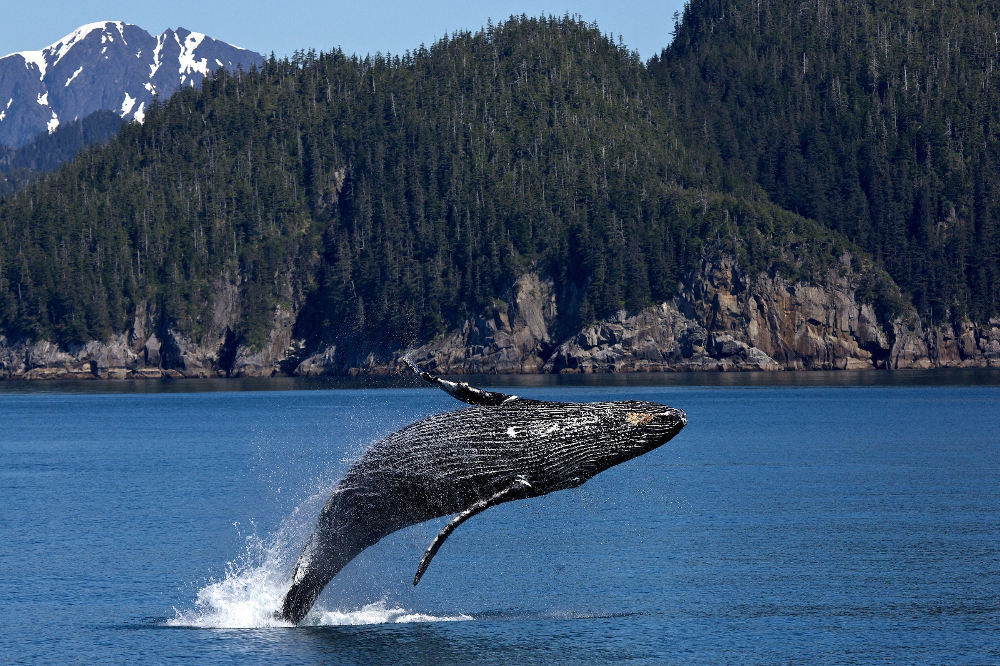
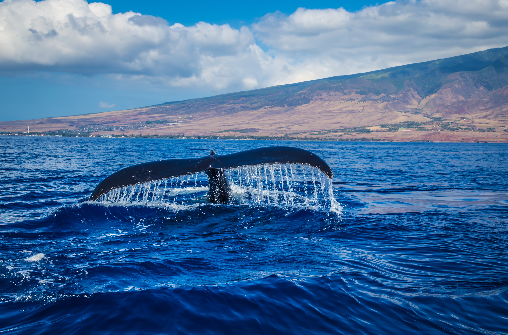
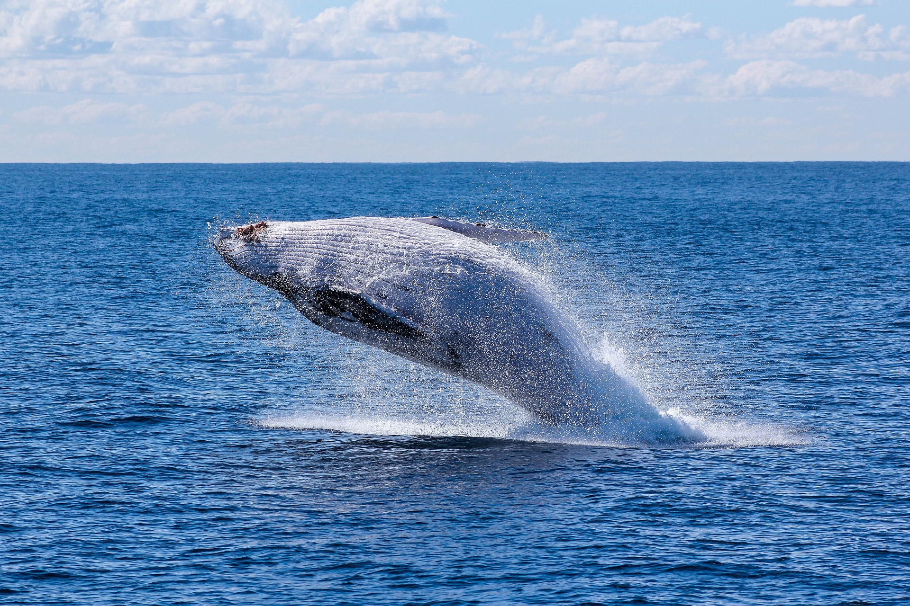
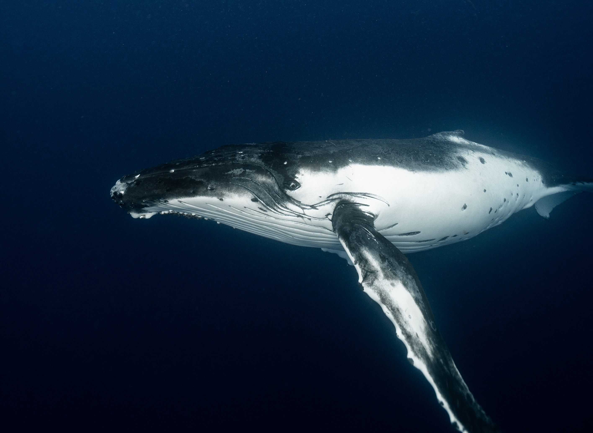

5 Rare and Endangered Animals Around the Globe
Blue Whale
 |
The blue whale (Balaenoptera musculus) is a marine mammal and a baleen whale. Reaching a maximum confirmed length of 29.9 meters (98 ft) and weighing up to 199 tonnes (196 long tons; 219 short tons), it is the largest animal known ever to have existed. The blue whale's long and slender body can be of various shades of greyish-blue dorsally and somewhat lighter underneath. Four subspecies are recognized: B. m. musculus in the North Atlantic and North Pacific, B. m. intermedia in the Southern Ocean, B. m. brevicauda (the pygmy blue whale) in the Indian Ocean and South Pacific Ocean, B. m. indica in the Northern Indian Ocean. There is also a population in the waters off Chile that may constitute a fifth subspecies.In general, blue whale populations migrate between their summer feeding areas near the poles and their winter breeding grounds near the tropics. There is also evidence of year-round residencies, and partial or age/sex-based migration. Blue whales are filter feeders; their diet consists almost exclusively of krill. They are generally solitary or gather in small groups, and have no well-defined social structure other than mother-calf bonds. The fundamental frequency for blue whale vocalizations ranges from 8 to 25 Hz and the production of vocalizations may vary by region, season, behavior, and time of day. Orcas are their only natural predators.The blue whale was once abundant in nearly all the Earth's oceans until the end of the 19th century. It was hunted almost to the point of extinction by whalers until the International Whaling Commission banned all blue whale hunting in 1966. The International Union for Conservation of Nature has listed blue whales as Endangered as of 2018. It continues to face numerous man-made threats such as ship strikes, pollution, ocean noise and climate change. |
TaxonomyThe genus name, Balaenoptera, means winged whale while the species name, musculus, could mean "muscle" or a diminutive form of "mouse", possibly a pun by Carl Linnaeus when he named the species in Systema Naturae. One of the first published descriptions of a blue whale comes from Robert Sibbald's Phalainologia Nova, after Sibbald found a stranded whale in the estuary of the Firth of Forth, Scotland, in 1692. The name "blue whale" was derived from the Norwegian "blåhval", coined by Svend Foyn shortly after he had perfected the harpoon gun. The Norwegian scientist G. O. Sars adopted it as the common name in 1874. Blue whales were referred to as 'Sibbald's rorqual', after Robert Sibbald, who first described the species. Herman Melville called the blue whale "sulphur bottom" in his novel Moby Dick because of the accumulation of diatoms creating a yellowish appearance on their pale undersi |
 |
|  |
ReproductionBlue whales generally reach sexual maturity at 8–10 years. In the Northern Hemisphere, the length at which they reach maturity is 21–23 meters (69–75 ft) for females and 20–21 meters (66–69 ft) for males. In the Southern Hemisphere, the length of maturity is 23–24 meters (75–79 ft) and 22 meters (72 ft) for females and males respectively. Male pygmy blue whales average 18.7 meters (61.4 ft) at sexual maturity. Female pygmy blue whales are 21.0–21.7 meters (68.9–71.2 ft) in length and roughly 10 years old at the age of sexual maturity. Little is known about mating behavior, or breeding and birthing areas. Blue whales appear to be polygynous, with males competing for females. A male blue whale typically trails a female and will fight off potential rivals. The species mates from fall to winter. |
Conservation
The global blue whale population is estimated to be 5,000–15,000 mature individuals and 10,000-25,000 total as of 2018. By comparison, there were at least 140,000 mature whales in 1926. There are an estimated total of 1,000–3,000 whales in the North Atlantic, 3,000–5,000 in the North Pacific and 5,000–8,000 in the Antarctic. There are possibly 1,000–3,000 whales in the eastern South Pacific while the pygmy blue whale may number 2,000–5,000 individuals. Blue whales have been protected in areas of the Southern Hemisphere since 1939. In 1955 they were given complete protection in the North Atlantic under the International Convention for the Regulation of Whaling; this protection was extended to the Antarctic in 1965 and the North Pacific in 1966. The protected status of North Atlantic blue whales was not recognized by Iceland until 1960. In the US, the species is protected under the Endangered Species Act. |
 |
|  |
Fun Facts
|